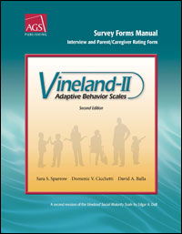
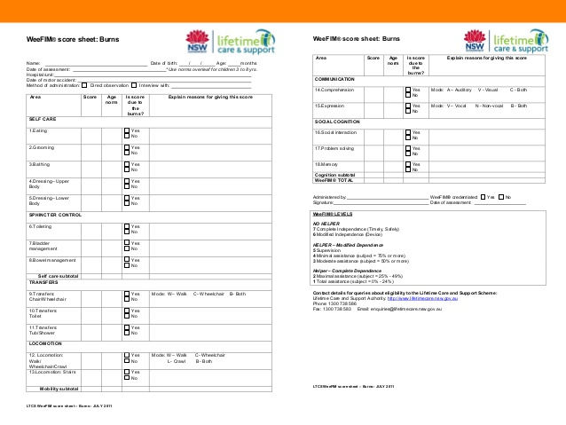
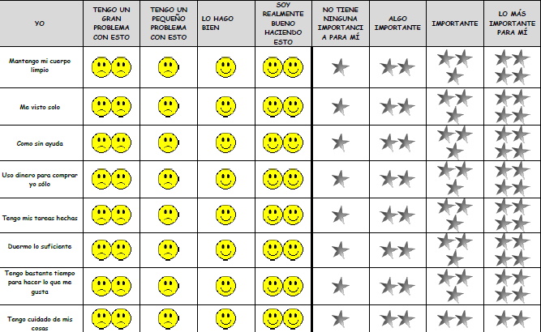
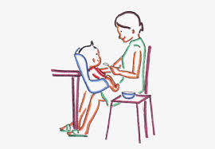
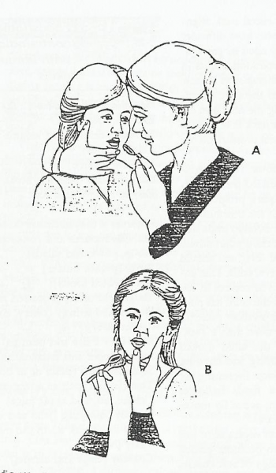
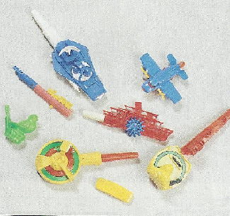
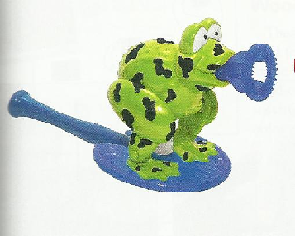

Desempeño ocupacional del niño en las actividades de la vida diaria (AVD)
• Describir las AVD típicas de la infancia.
• Describir la secuencia de desarrollo esperable en ellas.
• Identificar las variables que pueden afectar el desempeño ocupacional
del niño.
• Conocer aspectos importantes para la evaluación.
• Identificar estrategias de intervención general para promover la participación
del niño en las AVD.
• Reconocer la importancia de las AVD en el desarrollo de la autonomía
personal, la autoestima y la satisfacción personal.
• Conocer la importancia del trabajo conjunto con la familia.
Las actividades de la vida diaria son fundamentales para vivir en un mundo social; permiten la supervivencia y el bienestar (AOTA, 2010).
Son actividades habituales que responden a esquemas de hábitos y rutinas y que, en general, se realizan de manera casi automática. Pero, en el caso de los niños, no surgen solas a medida que estos crecen, sino que deben ser aprendidas e incorporadas en su rutina. Ello dependerá de varios factores que analizaremos más adelante.
Dado que en este período del ciclo vital el niño depende del adulto, las AVD se constituyen en un espacio de encuentro y comunicación, de transmisión de valores y costumbres familiares y culturales, razón por la cual adquieren un significado especial.
Se dividen en actividades de la vida diaria (AVD) básicas e instrumentales. Según la definición de la AOTA, las AVD básicas son aquellas actividades orientadas al cuidado del propio cuerpo, que son fundamentales para vivir en el mundo social y permiten la supervivencia y el bienestar. Las actividades que se incluyen en el área son: ducha e higiene personal, alimentación, vestido, arreglo personal, cuidado del intestino y la vejiga, aseo e higiene en el inodoro, actividad sexual, movilidad funcional.
Las AVD instrumentales se definen como actividades de apoyo a la vida cotidiana en la casa y la comunidad, que requieren interacciones de mayor complejidad. Los niños asumen responsabilidades para realizar estas actividades, como por ejemplo, ayudar a levantar la mesa en la casa, alimentar a la mascota, hacer su cama, viajar en colectivo, hacer compras, entre otras. Implican tareas opcionales, no esenciales, y que pueden delegarse en otras personas.
2.1. Desarrollo evolutivo de la participación del niño en las AVD. Rol de la familia
Si bien en las edades tempranas el niño es dependiente del adulto para su cuidado personal, es esperable que vaya adquiriendo mayor independencia en el transcurso del ciclo vital hasta lograr su completa autonomía. Este proceso se produce durante los primeros diez años de vida y, en general, cerca de los 12 años el niño ya realiza las rutinas de autocuidado sin asistencia y comienza a cuidar su privacidad en ellas.
Este proceso gradual se apoya en el desarrollo de habilidades sensoriales, motoras, cognitivas y psicosociales, pero también depende del entorno en el que vive y crece. Un ambiente estimulante, con adultos que puedan acompañar el proceso y se constituyan en quienes enseñan y habilitan la independencia del niño, son elementos de suma importancia. Los desafíos que los padres presentan, la estimulación y el éxito en la realización de cada actividad son factores esenciales para la motivación del niño.
La familia adquiere así un lugar fundamental, ya que son los padres quienes también organizan las ocupaciones del niño durante el día y proveen asistencia para que logre una participación exitosa en ellas.
Es importante hacer referencia al proceso de crianza que se lleva a cabo en el interior de cada familia, y que podemos relacionar en algunos aspectos con el desarrollo de la autonomía en el cuidado personal.
La crianza se define como la alimentación y cuidado que recibe un niño pequeño hasta que puede valerse por sí mismo. Este proceso implica dos funciones esenciales para los padres o cuidadores en relación con el desarrollo de las ocupaciones. Una tiene que ver con habilitar al niño para que sea autónomo y la otra se relaciona con la enseñanza directa.
Más allá de los cuidados básicos primordiales que aseguran la supervivencia del niño, la crianza es una de las funciones más importantes de los padres o cuidadores, ya que implica brindar las oportunidades imprescindibles para el desarrollo físico, emocional, intelectual y social, protegerlo de las adversidades y riesgos del medio ambiente y ofrecer un espacio de confianza en el que el niño se sienta seguro de sí mismo.
En este proceso, los padres se convierten en un andamiaje, un sostén externo que organiza, acompaña, pone límites, enseña, facilitando así los aprendizajes del niño. El adulto se va adaptando a lo que el niño puede hacer o no; es más directivo, ayuda o hace cosas por el niño cuando aún no tiene las competencias necesarias para una actividad, pero debe ir retirándose progresivamente a medida que él adquiere las habilidades para hacerlo. Que el niño pueda ir aprendiendo implica que los padres o cuidadores den lugar a la exploración, la prueba, el error, los aciertos, pongan límites y, en consecuencia, promuevan el aprendizaje. El adulto toma lo que el niño puede hacer y parte desde allí para impulsar acciones más complejas que lo van a ir llevando hacia una mayor autonomía.
Un niño de 6 meses está comenzando a comer semisólidos; la mamá le da la papilla con una cuchara pequeña, lo estimula a abrir la boca y aceptar el alimento. En cada bocado ella pone poca papilla en la cuchara para que el niño no se atragante, no se ensucie y no se chorree. Al niño le llama la atención el plato con el alimento, por lo cual al tiempo intentará tocarlo. Se llevará las manos con papilla a la boca y aparecerán los primeros esbozos de alimentación independiente. Al tiempo, querrá sacarle la cuchara a la mamá para alimentarse solo, ella podrá ofrecerle otra cuchara para que la use mientras le da de comer, y él practicará varios intentos de tomar algo de comida hasta lograrlo. Aprenderá a llevarse la cuchara a la boca como ya lo hace con las manos, o los juguetes. Al principio el contenido se derramará, pero progresivamente aprenderá a hacerlo con más cuidado. La mamá podrá ahora dejar que coma solo unos cuantos bocados y lo estimulará a seguir haciéndolo, ayudándolo a tomar la comida del plato sin volcar y terminando todo el alimento.
Además de la realización de cada una de las actividades de la vida diaria, el accionar de los padres provee una organización al mundo del niño pequeño, que se va estructurando en hábitos y rutinas.
La AOTA (2010) define al hábito como “el comportamiento automático que es integrado en patrones más complejos y que le permite a las personas desempeñarse día a día”. Kielhofner plantea que los hábitos pueden definirse como “tendencias adquiridas a responder automáticamente y rendir en ciertas formas constantes en ambientes o situaciones conocidas”. Son conductas automáticas porque, una vez que se han realizado varias veces y se ha comprobado su eficiencia, se incorporan y permiten que la acción se despliegue por sí sola. Por ejemplo, doblar y guardar la ropa luego de desvestirse.
Una rutina es un “patrón de comportamiento observable, regular o fijo, repetitivo y que provee estructura a la vida diaria” (AOTA, 2010). Las rutinas ordenarán los distintos sucesos o actividades que se realizan durante el día, por ejemplo, bañarse antes de ir a dormir.
Kielhofner, G. (2004), "Habituación: Patrones de la Ocupación Diaria” en: Terapia Ocupacional. Modelo de Ocupación Humana. Teoría y aplicación. Ed. Médica Panamericana, Madrid, pp. 71-95.
Mary Spagnola y Bárbara Fiese (2007) definen las rutinas familiares como aquellas “prácticas específicas repetitivas que implican a dos o más miembros de una familia”. Comportan comunicación, códigos, actividades compartidas que dan identidad a ser miembro de ese grupo. Paula McNamara y Ruth Humphry (2008) plantean que pueden identificarse por la regularidad temporal en la que dos o más personas coordinan sus acciones para lograr un objetivo o resultado común. Las rutinas influyen en el desarrollo, ya que la participación guiada y acompañada del niño en las actividades cotidianas es el contexto en el que se ponen en juego las conductas y maneras de pensar de su comunidad, que son transmitidas de manera natural y espontánea. Por otro lado, la naturaleza recurrente de las rutinas provee situaciones ideales en las que se repiten comportamientos que llevan hacia el dominio de actividades de mayor complejidad. Por último, la predictibilidad en las rutinas da al niño una sensación de organización y pertenencia.
Es destacable el rol de los padres o cuidadores en el aprendizaje de las rutinas y la socialización. En general, los adultos utilizan una variedad de estrategias para comunicar al niño lo que debe hacer y cómo hacerlo: indicaciones verbales, ayudas físicas, a través de la demostración, preguntándole al niño la secuencia de acciones, iniciando la actividad para que el niño la continúe, u ofreciendo los objetos necesarios para cada actividad.
Las rutinas proveen oportunidades de aprendizaje y el adulto que responde a las necesidades del niño se anticipa a ellas y lo acompaña en la realización de las actividades, confirmándole que estas tienen un valor.
El logro de la autonomía personal y la responsabilidad por su cuidado da al niño una sensación de bienestar y eficacia y le permite ir adquiriendo el dominio de distintos roles relacionados con el cuidado de sí mismo y de otros.
2.2. Factores que inciden en el desempeño ocupacional del niño en las AVD
Existen varios factores que pueden determinar la manera en que cada niño desarrolla su modalidad de participación en las actividades de la vida diaria:
- Sus características personales, entre las cuales se incluyen sus habilidades, sus limitaciones, su interés, su edad. Es esperable que las habilidades y destrezas se vayan desarrollando a medida que el niño crece, lo que depende también de la presencia de un entorno que las facilite. El interés reside en la estimulación del entorno, la satisfacción por el logro y la participación en cada actividad. Muchos desórdenes impactan en la posibilidad de desarrollar y ejecutar tareas y rutinas de autocuidado: parálisis cerebral, retraso mental, trastornos del espectro autista, artritis juvenil, distrofia muscular, entre otros.
- Las características familiares, los aspectos facilitadores y obstaculizadores en relación con la estimulación del entorno cercano, el acompañamiento y sostén, la comunicación.
- Los contextos y entornos social, físico y cultural que determinan el valor de las ocupaciones, sus características, la manera de llevarlas a cabo, las personas que participen en la enseñanza y en espacios sociales que influyan en las ocupaciones cotidianas, los obstáculos y aspectos favorables del entorno físico, la accesibilidad de los objetos y materiales, entre otros. Las pautas sociales y culturales son transmitidas al niño por la familia y marcan las conductas esperables en los distintos ciclos de la vida.
En la cultura occidental, los padres no duermen con los niños principalmente porque la sociedad sostiene que hacerlo fomenta la dependencia emocional y genera el riesgo de asfixiarlos en la noche. En otras culturas en las que los bebés duermen con sus padres se observa que aumentan su temperatura corporal, aprenden a respirar, estabilizan su ritmo cardíaco, reducen el llanto y las apneas durante el sueño, además de estar en contacto cercano. Es por ello que el colecho suele ser una situación común en las familias, que, de hecho, se extiende en el tiempo por sus beneficios.
1.
Dé un ejemplo de obstáculo relacionado con cada uno de los factores anteriormente expuestos en el desarrollo de la autonomía de las AVD en un niño pequeño.
2.3. Evaluación de las AVD
Es esencial que, al trabajar con niños con problemáticas que impactan en el desempeño ocupacional en las AVD, se conozca el desarrollo esperable. La complejidad de estas ocupaciones requiere que se tengan en cuenta y evalúen distintos aspectos: las habilidades y destrezas del niño, el contexto sociocultural de la familia (estructura, valores, roles, rutinas), el entorno físico. Es importante contar con la mayor información disponible relacionada a la dificultad que el niño presenta: antecedentes personales, familiares, informes de otros profesionales, tratamientos previos y actuales que el niño esté realizando.
Establecer los puntos importantes para el niño y la familia en cuanto a su participación facilita la evaluación y la intervención y es uno de los ejes principales de la práctica centrada en el cliente y su familia (Canadian Association of Occupational Therapists, 1997).
Pueden utilizarse distintos métodos de evaluación. Entre los procedimientos no estandarizados, se destacan los siguientes:
Entrevista a los padres o cuidadores: ofrece la oportunidad de conocer las ocupaciones, los roles y las actividades de la familia y comprender la problemática del niño desde la perspectiva de quien lo asiste en las actividades. En relación con ello, es importante indagar cuáles son las dificultades que presenta el niño en cada actividad y sus posibles causas, con quién realiza la actividad, cuánta asistencia requiere y en qué, cuánto tiempo tarda en completar la actividad y si la puede llevar a cabo satisfactoriamente.
Los padres también proveen información acerca de la historia del desarrollo y de los cambios en relación con cada una de las actividades de la vida diaria. Esto nos ayudará a conocer cómo fue cada proceso hasta el momento del inicio del tratamiento, cuáles fueron las dificultades y cómo se fueron resolviendo.
Por otro lado, es posible conocer los hábitos y rutinas familiares en torno a las ocupaciones y los conocimientos y mitos que generalmente circulan en relación con esta temática.
Asimismo, nos permite detectar cuáles fueron/son las dificultades de los padres o cuidadores y cuáles las expectativas y prioridades, lo cual ayudará a la hora de pensar las posibles intervenciones.
Observaciones sistemáticas: Shelley Mulligan las define como “aquellas que tienen lugar en el contexto y ambiente en que el niño desempeña regularmente sus actividades”. La información obtenida con este recurso complementa fuertemente y en forma más objetiva y detallada los datos brindados por los padres.
Las observaciones directas son muy útiles porque se realizan en el momento en que la actividad ocurre y permiten conocer las habilidades, limitaciones y estrategias utilizadas por el niño para resolver las dificultades.
Es conveniente observarlo realizando las AVD en su entorno familiar porque es probable que se comporte de la manera que lo hace cotidianamente. Si ello no fuera posible y la observación se realiza en otro ámbito, es importante utilizar elementos o condiciones similares a las de su casa, dado que si se suman muchas variables novedosas al momento de la observación, probablemente el desempeño real cotidiano se altere. Por ejemplo, al observar la actividad de alimentación, se puede pedir a los padres que lleven los cubiertos, el vaso y el plato que utiliza en el hogar y la comida que usualmente consume.
Con relación al observador, es importante que este sea lo menos disruptivo y participativo en la actividad durante su desarrollo, para no generar nuevas variables que la modifiquen.
Posibles aspectos generales a observar son:
- ¿El niño interactúa durante la actividad?
- ¿Se muestra motivado?
- ¿Participa activamente?
- ¿Requiere asistencia? ¿Cuánta? ¿En qué? ¿Por cuánto tiempo?
- ¿Cuáles son las limitaciones que presenta?
Mulligan recomienda incluir los siguientes factores al observar tareas funcionales:
- Una descripción del contexto en el que ocurre la actividad y las demandas de la actividad.
- El nivel de independencia del niño y el nivel y tipo de asistencia requerido.
- Técnicas, estrategias compensatorias o adaptaciones utilizadas para completar la tarea.
- Una descripción de cómo el niño completa la actividad.
- Las limitaciones que interfieren con la habilidad del niño para desempeñar la tarea en forma eficiente y segura.
Dado que los padres o cuidadores tienen un rol principal en las AVD, la observación de dichas tareas debería incluirlos. Esta instancia nos permite conocer las modalidades de interacción, la decodificación que el adulto hace de las habilidades del niño y qué recursos pone en juego en dichas situaciones.
¿Le habla? ¿Presta atención a lo que el niño necesita? ¿Estimula la participación del niño en la actividad? ¿Respeta los tiempos del niño? ¿Resuelve la situación rápidamente?
Por otro lado, la utilización de herramientas de evaluación estandarizadas provee información objetiva. Tienen procedimientos específicos de aplicación y puntuación, por lo que cuentan con manuales instructivos que describen sus objetivos, la población para la cual fue diseñada, los materiales, aplicaciones y procedimientos en detalle para que todos los profesionales que las utilicen lo hagan de la misma manera.
MULLIGAN, S. (2006), "Herramientas de evaluación estandarizadas" “Entrevistas y observación”, en: Terapia Ocupacional en Pediatría. Proceso de evaluación, Médica Panamericana, Buenos Aires, pp. 147-221.
Algunas de las pruebas estandarizadas que se utilizan para evaluar el desarrollo en la niñez incluyen apartados que contemplan las AVD. Entre ellas, se describen a continuación varias de las más utilizadas:
A. Vineland A daptive Behavior Scales – 2nd edition Sparrow, Cichetti y Balla, 2002
Es una evalua ción que se puede utilizar en personas con disfunciones intelectuales, retraso en el desarrollo, trastornos del espectro autista y otras problemáticas de salud desde el nacimiento hasta los 90 años.
El objetivo es evaluar la conducta adaptativa del individuo. Consta de dos formularios: una entrevista semiestructurada y un formulario para los padres. El test mide 5 dominios: comunicación, AVD, socialización, destrezas motoras y conducta desadaptativa.
El dominio de las AVD evalúa la conducta personal y las destrezas de interacción doméstica y comunitaria. La conducta personal incluye las actividades de alimentación, vestido e higiene personal. La conducta en el hogar evalúa cómo el individuo desempeña tareas en el hogar, y la conducta en la comunidad incluye la organización del tiempo, uso de dinero, teléfono, computadora y destrezas laborales.
B. Wee-Fim (Functional Independence Measure for Children) Wong, Paed, Wong, Chan y Wong, 2002.
Es un instrumento que mide el desempeño de las habilidades funcionales diarias del niño y el nivel de dependencia, determinando la gravedad de la discapacidad y la necesidad de asistencia. Se aplica en niños de 6 meses a 18 años que presentan retraso en el desarrollo de las funciones.

Consta de 18 ítems, en las áreas de: autocuidado (6 ítems), control de esfínteres (2 ítems), movilidad (3 ítems de transferencias y 2 de locomoción) y cognitiva (2 ítems de comunicación y 3 de integración social). Cuenta con dos escalas: 0 a 3 años y 3 a 18 años. Los datos se obtienen a partir de una entrevista a los padres o cuidadores y una observación directa.
Los niveles de independencia son: dependencia absoluta (necesita asistencia máxima o total), dependencia relativa (requiere asistencia moderada, asistencia mínima o supervisión/apoyo) o independiente (independencia relativa o independencia absoluta).
C. PEDI CAT (Pediatric Evaluation of Disability Inventory Computer Adaptive Test) Haley, Coster, Dumas, Fragala-Pinkham, Moed, 2004
Es una versión informatizada y adaptada de l PEDI, originalmente publicado en 1992. Evalúa 3 dominios: autocuidado, movilidad y funcionamiento social. Puede utilizarse en niños con cualquier diagnóstico y en todos los ámbitos. Fue diseñado para usarse en niños y jóvenes desde el nacimiento hasta los 20 años. Los objetivos son identificar las dificultades funcionales y evaluar los cambios producidos en el niño luego de la intervención.
En el dominio de las AVD se incluyen: vestido, aseo, tareas del hogar y alimentación.
Para mayor información: <http://pedicat.com/category/home/>
D. Child Occupational Self Assessment (COSA)
Es un instrumento basado en el Modelo de la Ocupación Humana que se puede utilizar en niños de 8 a 11 años. Es una autoevaluación que permite conocer la percepción que tiene el niño de su propia competencia ocupacional, el impacto ambiental y sus valores.
El formulario incluye afirmaciones acerca del funcionamiento en las cuales el niño marca con caritas y estrellas su nivel de desempeño y la importancia que dichas actividades tienen.

2.4. Intervención en las AVD
La extensión y la complejidad de las AVD requieren de una evaluación específica de todos los aspectos que inciden en ellas, acorde a cada niño y familia en particular. Las intervenciones estarán, entonces, también orientadas a la particularidad de cada caso. No toda técnica es apropiada a todo niño; se requiere un razonamiento clínico y de resolución de problemas en forma permanente para la implementación de todo proceso terapéutico.
A su vez, el marco teórico al que adhiera el terapista ocupacional también determinará las intervenciones, los recursos y las técnicas que se utilicen durante el tratamiento.
Según Case-Smith, las preguntas que debe hacerse el terapista ocupacional al planificar las intervenciones en las AVD son:
- ¿cuáles actividades de autocuidado son significativas y útiles en el contexto del niño y la familia?
- ¿cuáles son las preferencias del niño y su familia?
- ¿puede el niño adquirir nuevas destrezas? ¿en cuánto tiempo?
- ¿qué alternativas se pueden sugerir para que realice las tareas?
- ¿cuál es la influencia del entorno sociocultural?
Begoña Polonio López y Dulce Romero Ayuso plantean cuatro posibles abordajes para la intervención en las AVD en pediatría, que permiten pensar las estrategias posibles una vez realizada la evaluación inicial: centrado en el desarrollo, remediador, de sustitución y compensatorio.
El abordaje sobre el desarrollo, centrado en el desarrollo de las habilidades del niño de acuerdo con su edad, es especialmente útil en niños pequeños con dificultades leves. Implica que el niño aún no desarrolló destrezas, pero que tiene las posibilidades de hacerlo de acuerdo con su edad cronológica. Las actividades propuestas se relacionan con la secuencia del desarrollo típico.
Un niño de 4 años come con las manos cualquier tipo de alimento. Los padres permiten que se alimente de esa manera porque evitan berrinches del niño y logran que coma. Cuando no lo hace, la madre le da de comer en la boca. No se muestran preocupados por ello, no lo estimulan al uso de cubiertos ni proveen organización en el momento de la comida, pero el jardín al que concurre ha marcado esta dificultad. Una de las posibles hipótesis es que el entorno no favoreció ni estimuló el desarrollo de las habilidades necesarias para la autoalimentación. Son posibles intervenciones: con el niño, favorecer el desarrollo de habilidades manuales, explorar el uso de cubiertos; con los padres, establecer rutinas, brindar recomendaciones acerca de la forma de organizar la actividad y trabajar la importancia del desempeño ocupacional independiente del niño acorde a su edad y destrezas.
A su vez, el Marco de Trabajo para la Práctica de Terapia Ocupacional determina cinco enfoques de intervención. El abordaje remediador implica que hay que restablecer una habilidad que se ha afectado. En la niñez, podría decirse que este enfoque se utiliza cuando el niño ha tenido un desarrollo dentro de los parámetros esperables y por alguna razón se pierden habilidades o destrezas, impactando fuertemente en el desempeño ocupacional.
Un niño de 3 años que ha permanecido internado por un tiempo prolongado, en un espacio poco estimulante y con instrumentos de soporte vital que le impidieron movilizarse, muestra actualmente un desempeño ocupacional pobre en las AVD. Presenta inestabilidad postural, dificultades en la marcha y escaso interés en el medio que lo rodea. Hasta el momento de la internación, presentaba un desarrollo evolutivo normal, era un niño muy activo y movedizo. Las intervenciones podrían incluir la estimulación de las destrezas motoras perdidas, favorecer la participación activa en las AVD y trabajar con los padres para que promuevan los logros en el hogar.
Otro enfoque se relaciona con mantener las capacidades del desempeño, con las ayudas necesarias para llevar a cabo las ocupaciones.
Un niño con trastorno del espectro autista que ha logrado conectarse con la actividad de higiene oral, requerirá de asistencia de los padres o cuidadores para mantener el interés en esta. Las intervenciones podrían incluir juegos con el cepillo de dientes, estructuración de la rutina en un horario específico o realización conjunta de la actividad con alguno de los padres.
Por último, los enfoques de compensación y adaptación, dirigidos a la implementación de estrategias o ayudas que permitan que el niño sostenga un desempeño ocupacional lo más independiente posible, cuando no es posible desarrollar o remediar una destreza o habilidad.
Estas estrategias pueden incluir la modificación de la tarea, la adaptación de elementos e incorporación de ayudas técnicas o nuevas tecnologías y la adaptación del ambiente.
La modificación de las tareas implica graduar las demandas de la actividad, desde los elementos a utilizar hasta los pasos a seguir. Para realizar una correcta graduación, es necesario realizar un análisis previo de la actividad que permita registrar las subtareas, las habilidades y destrezas requeridas en cada una. El terapista ocupacional puede realizar variaciones de acuerdo con las dificultades del niño, haciéndola más sencilla, menos compleja y utilizando elementos acordes a las posibilidades del niño.
Para calzarse zapatillas, es necesario ubicar cada zapatilla en el pie correcto, poner el pie y atarse los cordones. Se puede facilitar la actividad si le alcanzamos al niño la zapatilla al pie correcto, dejando que él coloque el pie. Se requieren menos destrezas perceptivas y cognitivas. Modificando el calzado y si en vez de usar zapatillas acordonadas sugerimos zapatillas con velcro, el niño puede abrocharse el calzado solo pegando la solapa en la base correspondiente y no requerirá prensiones tan finas ni las habilidades perceptivas y cognitivas requeridas para hacer el nudo.
Según Case-Smith, el uso de ayudas técnicas es una decisión cooperativa entre el niño, los padres y el profesional. A partir de la evaluación de las habilidades y limitaciones, se elige la ayuda más adecuada, que debe cumplir los siguientes requisitos:
- asistir en la tarea que el niño quiere realizar.
- ser aceptada por el niño y su entorno.
- ser práctica y que pueda utilizarse en distintos ámbitos (dimensiones, facilidad de traslado, etcétera).
- ser durable y fácil de limpiar.
- ser segura para el niño.
- ser económicamente accesible para la familia.
Debe tenerse en cuenta que el uso de una ayuda técnica debe permitir que el niño realice las tareas en un nivel de eficiencia mayor que si no la utiliza, y no debe compensar o anular habilidades que tiene y que puede utilizar.
Algunas de ellas son: equipamiento dinámico o semidinámico (slings de neopreno o lycra), férulas dinámicas y semidinámicas para codo, antebrazo y mano, que ayudan a mantener la alineación y mejoran la función, ortesis dinámicas de muñeca y dedos utilizadas para brindar posicionamiento y mejorar la función, entre otras.
La adaptación del ambiente es fundamental en los casos en los que el contexto físico obstaculiza la actividad. La adaptación de los elementos que se utilizan favorece el desempeño autónomo del niño y constituye la intervención más común.
Un niño presenta prensiones primitivas y poca fuerza muscular para sostener los cubiertos, pero puede tomar alimento del plato con la cuchara con movimientos lentos y llevársela a la boca. El terapista ocupacional adapta la cuchara engrosando el mango para facilitar la prensión y coloca una cinta de velcro que permita fijar el utensilio a la mano para evitar que se caiga cuando la carga y se la lleva a la boca. Esta adaptación permite que el niño coma solo, utilice los patrones de movimiento y la prensión, pero contando con elementos que faciliten la actividad.
Por otro lado, la superficie de la actividad debe ser tenida en cuenta: altura, dimensiones, inclinación, distancia del cuerpo y características (color, superficie, etc.). Los cambios en estas variables promueven la funcionalidad del niño; por ejemplo, modificar el color de la superficie puede facilitar que el niño distinga con mayor habilidad los elementos sobre la mesa.
La ubicación de los elementos durante la actividad también es importante: la distancia, el peso, el tamaño y las destrezas requeridas para su manipulación y uso.
Las posiciones corporales tradicionales para realizar la actividad no siempre son funcionales para el niño. Por ejemplo, en un niño con desórdenes neuromotores la posición de estar sentado en una silla puede generar mayor disfunción y poca funcionalidad al ponerse los pantalones por la necesidad de estabilidad corporal, por lo que se le puede enseñar a vestirse en otra posición; por ejemplo, recostado en la cama.
Con relación al ambiente circundante, muchas veces se requieren modificaciones que favorezcan la función. Por ejemplo, un niño hiperreactivo sensorial o con problemas atencionales, en un ambiente ruidoso, lleno de estímulos visuales y con mucha gente, presentará dificultades para comer solo. Los cambios posibles pueden relacionarse con disminuir los estímulos visuales (apagar la TV), mantener un ambiente tranquilo, con los objetos necesarios a su alcance y favorecer que el adulto lo asista en la organización de la tarea.
En algunas oportunidades las adaptaciones son temporarias, si el niño puede desarrollar las destrezas requeridas, pero se utilizan para que pueda realizar las AVD en forma independiente hasta tanto pueda realizarlas sin ellas.
El uso terapéutico de las ocupaciones y de las actividades es el tipo de intervención fundamental que se utiliza. Según el Marco de Trabajo, son aquellas seleccionadas especialmente para cumplir objetivos específicos con un cliente.
| Uso Terapéutico de las Ocupaciones y Actividades |
| 1. Métodos preparatorios |
| 2. Actividades con propósito |
| 3. Intervención basada en la ocupación |
En muchos casos se hacen necesarios los métodos preparatorios que preparan al niño para el desempeño ocupacional, por ejemplo proveer el input sensorial adecuado que ayude a regular el tono muscular o que organice la actividad del niño antes de iniciarla.
Las actividades con propósito, definidas como aquellas que permiten el desarrollo de habilidades, son muy utilizadas en el trabajo con niños. La estimulación de las habilidades motoras orales puede hacerse a través de juegos que requieran la participación de ciertos grupos musculares, la coordinación de los movimientos; por ejemplo, soplar burbujas, jugar carreras de bolitas de telgopor soplándolas sobre una mesa, hacer sonar silbatos, etc. Estas actividades son significativas para el niño y a la vez permiten trabajar los aspectos motores que posteriormente serán utilizados al momento de la alimentación.
Las intervenciones basadas en la ocupación implican realizar la actividad junto con el niño —por ejemplo, lavarse y secarse las manos— e ir realizando intervenciones específicas en el momento en que se lleva a cabo.
2.
Dé dos ejemplos concretos de actividades con propósito relacionados con la higiene y el vestido que se puedan implementar en niños con dificultades en el planeamiento motor.
2.5. Alimentación
La alimentación es una ocupación esencial que ocurre varias veces en el día y que, además de proveer al niño los nutrientes necesarios para su supervivencia y desarrollo, es un importante espacio de aprendizaje que permite el intercambio con los padres o cuidadores. Podemos decir que es una co-ocupación, en especial en edades tempranas.
Son los adultos quienes determinan en qué momentos del día se realiza la ocupación y de qué manera, quienes seleccionan los alimentos, la variedad y la cantidad. Estas elecciones dependerán de lo que consideren adecuado por la edad, las necesidades nutricionales, los recursos con que cuentan, las tradiciones o costumbres de su entorno sociocultural y las expectativas personales en relación con la alimentación de su hijo.
Por otro lado, es esperable que los padres puedan tener en cuenta las características particulares de cada niño: el tiempo que necesita para alimentarse, los gustos que prefiere y el interés en la actividad.
La manera en que los padres vivencian la experiencia de alimentar a su hijo también es un factor importante que muchas veces determina la motivación y el interés que ese niño tendrá en dicha ocupación.
Si los padres disfrutan del momento de alimentar a su niño pequeño, pueden organizar la actividad y el entorno y ofrecer el alimento en forma pausada, respetando los tiempos necesarios para que el niño coma, en un ámbito tranquilo y amable, estimulándolo a que pueda ir realizando algunas de las acciones necesarias en forma autónoma. Es probable que, así, la alimentación se convierta en un espacio de encuentro, que adquiera una importancia y significado positivos para el niño, motivándolo a continuar participando.
Por el contrario, si la actividad resulta poco placentera o poco significativa para los padres, se convierte en una obligación y se transmite al niño de esa manera. Cualquier dificultad que aparezca se consolida como un verdadero problema que afecta a la actividad en sí. Por ejemplo, que el niño vuelque el vaso o el plato, muchas veces ocasiona el enojo y el reto del adulto en lugar de ofrecer alternativas de resolución o aprendizaje para el niño. En estos casos, es probable que los padres no puedan decodificar las necesidades y habilidades del niño, ofreciendo a veces alternativas que no son las adecuadas para él.
Los cambios que se van produciendo en las destrezas relacionadas con la alimentación requieren que también se vayan ofreciendo nuevos desafíos a la hora de comer.
La alimentación es un proceso complejo que requiere del interjuego de numerosos factores que se desarrollarán en los siguientes apartados.
2.5.1. Desarrollo de las habilidades y destrezas para la alimentación
La AOTA, en el Marco de Trabajo para la Práctica de Terapia Ocupacional (2ª edición, 2010) diferencia dos actividades de la vida diaria relacionadas con la ingesta de alimentos: comer y alimentarse (esta última también llamada autoalimentación).
Comer se define como la “capacidad para manipular y mantener los alimentos o líquidos en la boca y tragarlos”. La autoalimentación alude al “proceso de preparar, organizar y llevar el alimento o líquido del plato o taza/vaso a la boca”.
Para que un individuo pueda alimentarse, deben ponerse en juego y desarrollarse numerosas funciones, estructuras corporales y destrezas de ejecución.
| Destrezas de ejecución |
| Destrezas motoras y praxis |
| Destrezas sensoriales y perceptuales |
| Destrezas de regulación emocional |
| Destrezas cognitivas |
| Destrezas de comunicación y sociales |
| Funciones y estructuras corporales |
| Funciones mentales |
| Funciones sensoriales |
| Funciones neuromusculoesqueléticas y relacionadas con el movimiento |
| Funciones de los sistemas respiratorio y cardiovascular |
| Funciones de los sistemas digestivo, metabólico y endocrino |
| Estructuras relacionadas con el movimiento |
| Estructuras relacionadas con los sistemas digestivo, metabólico y endocrino |
La ocupación de alimentación irá atravesando varias fases o etapas a medida que el niño crece, que van desde la alimentación de pecho hasta la autoalimentación en la mesa con el uso de cubiertos. La calidad del desempeño en dichas actividades se incrementa gradualmente a partir de la práctica hasta que logra su dominio.
El recién nacido a término está preparado anatómica y neurológicamente para iniciar la alimentación inmediatamente al momento de nacer. Dispone de un conjunto de reflejos orales que le permiten localizar el alimento, succionar y tragar líquido: reflejo de búsqueda, reflejo de succión, reflejo deglutorio y, por otro lado, los reflejos de vómito y reflejo tusígeno como protección.
Los bebés realizan dos tipos de succión: la nutritiva (SN) y la no nutritiva (SNN). La succión nutritiva es la que utiliza para comer. La succión no nutritiva es superficial y rápida y el bebé la utiliza para regular sus estados de desorganización y explorar. Si bien parecen similares, se utilizan distintos patrones en cada una de ellas.
La deglución es un mecanismo complejo de coordinación neuromuscular de los componentes de la cavidad bucal, faríngea y laríngea, con una interrupción breve de la respiración. Al momento del nacimiento, la deglución es una reacción refleja que, con la maduración, se vuelve voluntaria.
Es de fundamental importancia el desarrollo de la sincronía entre la succión, la deglución y la respiración, que constituye un componente crítico en el mecanismo motor oral. Cada elemento interactúa, favorece y sostiene a cada uno de los otros en distinto grado, de acuerdo con la actividad. Es el primer patrón que requiere ritmo y movimientos secuenciados y es de gran importancia para el desarrollo del lenguaje, la alimentación, la autorregulación, el control postural y la coordinación óculo-manual.
El patrón de succión desarrolla gran parte de la discriminación sensorial y el control muscular necesarios más adelante para comer alimentos sólidos o hablar. Una disrupción en la sincronía succión-deglución-respiración puede afectar profundamente el desarrollo.
En un lactante, los signos comunes que pueden indicar una sincronía ineficiente son: cierre inefectivo de los labios al succionar, dificultad para respirar cuando succiona o come y babeo excesivo cuando no está siendo alimentado.
Durante la infancia temprana, la alimentación requiere que el adulto provea el sostén cefálico y la alineación cabeza–tronco, para que el niño pueda coordinar dicha sincronía.
Se sugiere el siguiente material para profundizar sobre la relación entre los aspectos motrices, orales, visuales y posturales.
Oetter, P.; Richter, E. (1993), M.O.R.E. Integrating the Mouth wIth Sensory and Postural Functions, PDP Press.
Las estructuras anatómicas de la boca y garganta se modifican en forma significativa durante el primer año de vida, lo cual permite el desarrollo de patrones gradualmente más maduros de alimentación. El niño irá desarrollando las destrezas para succionar, beber, morder y masticar.
El recién nacido tiene una cavidad bucal pequeña ocupada en gran parte por la lengua y la parte interior de las mejillas, que le permiten succionar fácilmente. Las estructuras en la garganta están muy cercanas unas de otras, lo cual facilita el pasaje del líquido sin que se atragante cuando se alimenta en posición reclinada. La succión en los primeros 4 meses se caracteriza porque los movimientos de la lengua son hacia adelante y atrás, en ocasiones con pérdida del líquido por las comisuras labiales.
A medida que el niño crece, la relación entre las estructuras orales se modifica: la lengua se afina y la cavidad bucal se agranda. Por esta razón la lengua, los labios y las mejillas deben lograr un mayor control de los líquidos, surgiendo así nuevos patrones. Después de los 4 meses, la lengua comienza a moverse hacia abajo y hacia arriba, la mandíbula se mantiene más estable y hay un mayor control de los movimientos. La succión se hace más rítmica y ya no chorrea el líquido al succionar.
A los 6 meses, es esperable que el niño haya adquirido el control de cabeza completamente y tenga una mayor estabilidad y control de los movimientos de la mandíbula, lo cual le permite tomar alimentos de una cuchara.
Durante el proceso de la niñez, se producen varias transiciones que marcan momentos complejos en la alimentación, dado que implican variables nuevas que requieren de aprendizajes. La transición de la mamadera a un vaso/taza requiere principalmente un mayor control motor de la boca, en conjunto con la manipulación del vaso. Cuando el niño comienza a beber de una taza, pierde la coordinación que había adquirido para tomar el pecho o la mamadera, porque debe aprender a utilizar nuevos patrones motores. Luego de tomar dos o tres sorbos se detiene para tragar y respirar. Necesita también morder el borde de la taza o el vaso para estabilizar la mandíbula. Cerca de los 12 meses adquiere nuevamente dicha coordinación y gradualmente puede ganar eficiencia al beber sin derramar y sin atragantarse.
Para beber de un vaso o taza, el niño debe orientar el recipiente adecuadamente en relación con su boca e inclinarlo lo suficiente para poder tomar el líquido y no volcarlo. Si bien la intención puede aparecer tempranamente, las destrezas para lograrlo estarán presentes luego de los 12 meses de edad y podrá beber sin volcar cerca de los 2 años.
Para que el niño se acostumbre a las nuevas características de los alimentos, habrá que ir aumentando su consistencia, cuidar el tamaño de los bocados o incluir alimentos que se disuelvan rápidamente o sean fáciles de masticar.
Los líquidos son la consistencia más difícil de controlar dentro de la boca, por lo cual se pueden espesar un poco cuando el niño no tiene un buen control de la lengua ni un buen cierre de los labios. Una vez que se han trabajado estas habilidades, se podrá ir ofreciendo líquidos menos espesos, para que el niño gradualmente adquiera las destrezas necesarias para manejarlos. Además de la posibilidad de que desarrolle mayor habilidad, el hecho de modificar la consistencia también permite que realice la ocupación de alimentarse en forma positiva.
El niño desarrolla diferentes patrones de masticación en los primeros meses de vida: primero, una mordida con movimientos de la mandíbula de arriba hacia abajo y llevando la lengua al paladar, que es efectiva cuando come alimentos semisólidos como purés o yogurt (munching pattern).
Luego aparecen movimientos diagonales de masticación (a los 7 u 8 meses), movimientos laterales de la lengua y cerca de los 12 meses movimientos rotatorios, lo cual le permite mover el alimento dentro de la cavidad bucal. Los labios se cierran con efectividad, evitando que se derrame líquido o alimento al deslizarlo de la cuchara o durante la masticación.
A los 24 meses, el niño está preparado para comer casi todos los alimentos, dado que ha desarrollado los movimientos circulares de la masticación.
Gracias a este proceso, se genera otra transición importante que es el paso de los líquidos al alimento sólido.
El control de la postura de sentado, los movimientos de la muñeca más eficientes, las prensiones y la coordinación visomotora que gradualmente se irán haciendo más finas así como la mayor coordinación mano-boca, le permitirán tomar alimentos con los dedos y llevárselos a la boca. Entre los 9 y 13 meses el niño disfruta comer con las manos. Hacia el final de esta etapa comienza a experimentar con la cuchara y logra llevársela a la boca, pero derrama gran parte de su contenido.
Esta última transición de la alimentación con las manos al uso de los cubiertos es de gran complejidad. Este proceso es difícil para niños con problemas en el tono muscular o la coordinación, con escasa discriminación táctil en las manos o prensiones inmaduras, entre otras dificultades. Las posibles intervenciones, en este último caso, rondarán en torno a la adaptación de los utensilios y el entrenamiento para su uso eficiente.
Mulligan, S. (2006), "Desarrollo normal del niño" en: Terapia Ocupacional en Pediatría, Ed. Médica Panamericana, Buenos Aires-Madrid, pp. 87-145.
El logro de la autoalimentación merece especial atención, dado que es imprescindible la motivación del niño, además del desarrollo de las habilidades necesarias. Los intentos de tomar la comida, los cubiertos o el vaso dan cuenta de su interés en la actividad y en cada uno de estos elementos que le acercan los padres o cuidadores. Por ello es fundamental que el niño pueda acceder a ellos, explorarlos, experimentar y conocer, ya que será uno de los factores que promuevan su autonomía.
2.5.2. Factores que afectan el desempeño ocupacional en la alimentación. Evaluación
Existe una multiplicidad de factores que pueden afectar el desempeño ocupacional del niño en la alimentación y en el camino hacia la autoalimentación.
De acuerdo con Case-Smith, las principales dificultades se relacionan con el aspecto sensorial, el motor, la deglución, las estructuras orales y la interacción.
Aspecto sensorial
Es fundamental considerar el aspecto sensorial en la alimentación. Los niños pueden presentar hipersensibilidad dentro o alrededor de la boca, lo cual genera respuestas aversivas ante el contacto de cualquier estímulo cercano a la boca o en su interior, o frente a los alimentos que presentan determinadas características de textura, consistencia o temperatura.
Estas respuestas pueden ser:
- evitación del contacto con los cubiertos, vaso o taza, sorbetes o el alimento en sí,
- negación a comer,
- arcadas exageradas que no se correlaciona con la cantidad de alimento en la boca,
- vómitos ante el contacto con el estímulo,
- dificultad para incorporar nuevos alimentos,
- tragar sin masticar,
- preferencia por alimentos que provean inputs sensoriales pobres.
G. es un niño que presenta hipersensibilidad oral; es extremadamente selectivo en las comidas, pudiendo alimentarse únicamente con una mezcla de leche y harina que le prepara la mamá. Se niega a probar otros alimentos; a la sola vista de comida en el plato manifiesta actitud evitativa, corriendo el plato y levantándose de la mesa. No puede introducir cubiertos en su boca y no le gusta que le limpien la cara.
A su vez, los déficits del procesamiento sensorial en la zona oral producen dificultades en el movimiento de los labios y la lengua e incluyen el pobre cierre de los labios, las dificultades de movimiento de la lengua en la cavidad oral, movimientos exagerados de la boca y una succión inadecuada.
Una de las posibles causas para la hipersensibilidad se asocia a largos períodos de tiempo en que el niño no fue alimentado por boca y no recibió estimulación sensorial compensatoria, o a procedimientos invasivos tempranos en la zona de la boca —por ejemplo, alimentación por sonda nasogástrica, intubaciones u otros— que hayan generado reacciones defensivas a cualquier estímulo sensorial. Puede deberse también a una disfunción en la modulación sensorial.
Por otro lado, también puede presentarse hiposensibilidad. Debido a la hiporreacción a la información sensorial, puede haber una baja respuesta a la comida por su falta de percepción. Las conductas que entonces se observan son:
- búsqueda de estímulos que provean mayor input sensorial eligiendo alimentos con consistencias más duras, texturas más rugosas y temperaturas altas o bajas,
- llenarse la boca con comida,
- juego con los cubiertos o dedos en su boca o alrededor de ella, para proveerse estimulación.
H. es un niño de 5 años que es derivado por dificultades en la alimentación. La mamá refiere que la principal dificultad es que se llena la boca con comida y se atraganta. En la entrevista y en la observación, se detectan las siguientes conductas: se llena la boca con comida y la mantiene un tiempo considerable antes de tragarla, se chorrea la bebida y los alimentos semisólidos, mantiene la boca semiabierta mientras come, juega con los cubiertos dentro de la boca. Prefiere alimentos duros y bien calientes. Se observa que durante los momentos de juego se lleva permanentemente a la boca los dedos u objetos no comestibles y los muerde. Muestra una baja respuesta a experiencias táctiles en el área oral.
Los problemas sensoriales, especialmente la defensividad oral, son un problema crítico para el niño: en primer lugar porque limitan su ingesta tanto en cantidad como en variedad, repercutiendo a nivel nutricional. Por otro lado, pueden generar una interacción negativa o problemática con el adulto que lo alimenta.
Al momento de la evaluación es importante registrar:
- reacción positiva o negativa ante diferentes texturas de los alimentos.
- evitación o búsqueda de sabores u olores específicos.
- selectividad relacionada con las variables: textura, consistencia y temperatura.
- búsqueda o evitación de explorar objetos no comestibles con la boca.
Existen numerosas herramientas que permiten conocer el aspecto sensorial relacionado con la alimentación, todos ellos encuadrados en el Marco de Integración Sensorial. Entre ellas, se pueden citar:
- Sensory Profile. Supplement (Winnie Dunn) (2006)
- Guía de observación de integración sensorial (Schaaf, Burke, Anzalone) (1989)
- Historia sensorial
Aspecto motor
Con relación al aspecto motor, uno de los factores más importantes a considerar es el tono muscular. Cuando existe hipertono o hipotono en la zona oral, se dificulta el control apropiado de los labios y la boca. Asimismo la postura inestable, que resulta en una pobre alineación postural, incrementa las dificultades en las habilidades motoras orales.
Cuando hay hipotono, el niño suele mantener la boca abierta. Ello produce un babeo importante y se ven afectados los movimientos de la lengua, el del alimento dentro de la cavidad bucal y la estabilidad de la mandíbula, con posibles dificultades en la masticación y la deglución.
Cuando hay hipertono, algunas dificultades que se observan son:
- la mordida tónica, en la cual la mandíbula se mantiene inmovilizada una vez que se cierra la boca. Suele aparecer cuando el niño se encuentra mal posicionado con extensión de cuello o cuando presenta una extrema defensa táctil oral.
- la lengua se mantiene extendida y por fuera del borde de los labios, lo cual produce pérdida de comida o líquidos y dificulta el inicio de la masticación. También aparece cuando el niño se encuentra mal posicionado, con extensión de cuello y tronco.
Estas dificultades generalmente aparecen en niños con lesión cerebral, algunos síndromes genéticos y prematurez, entre otros. Pero en muchos casos, las dificultades se hacen visibles al inicio de la alimentación con sólidos, ya que requiere respuestas motoras más sofisticadas.
La falta o dificultad en el control de cabeza y tronco, la falta de equilibrio para sentarse y mantenerse en esa posición de manera funcional, la dificultad para tomar el alimento o los cubiertos y llevarlos a la boca son problemas motores importantes. La postura constituye un factor esencial. La hiperextensión de cuello y la pobre alineación postural influyen severamente en el momento de la alimentación, ya que incrementan el riesgo de que el niño se atore o se aspire.
En la evaluación es importante tener en cuenta:
- patrones motores orales, fuerza y tono muscular de la zona oral.
- alineación postural, control postural, estabilidad de cabeza y tronco.
- la observación de asimetrías posturales.
- movimientos individuales de la boca, lengua, mandíbulas y coordinación entre ellos.
Cada una de estas habilidades puede ser evaluada con instrumentos específicos. Será requisito luego hacer un análisis de los resultados y aplicarlos a la actividad específica de la alimentación.
Algunos de los instrumentos son:
- Peabody. Developmental Motor Scale (Folio, Fewell). Evalúa el desarrollo motor grueso y fino.
- QUEST. Quality of Upper Extremity Skills Test (De Matteo, Rusell, Pollock, Rosembaum, Walter). Evalúa la calidad del movimiento de la extremidad superior.
Deglución
A nivel de la deglución, la mayor dificultad reside en el riesgo de aspiración. En los casos de disfunciones motoras severas, el niño tiene dificultades para armar el bolo alimenticio, con altas probabilidades de que partes del alimento se deslicen hasta la faringe. Cuando no se logra la deglución, el cierre de la epiglotis no ocurre, dejando la tráquea abierta.
En los casos en que el niño no puede alimentarse en forma voluntaria por la vía oral, se utilizan métodos de nutrición artificial en forma temporaria o permanente. La nutrición enteral consiste en administrar los nutrientes a través de una sonda naso u orogástrica o una gastrostomía, suprimiendo las etapas bucal y esofágica de la digestión. La nutrición parenteral le aporta al niño los nutrientes básicos que necesita por vía intravenosa.
Es de suma importancia en estos casos que el niño reciba las experiencias orales necesarias mientras es alimentado por alguna de estas vías, para que esta ocupación sea significativa y no presente disfunciones posteriormente.
Estructuras orales
Los niños con problemas en las estructuras orales al momento del nacimiento pueden presentar dificultades en la alimentación relacionadas con estos déficits estructurales; por ejemplo, en los niños con labio leporino y fisura del paladar o hipoplasia mandibular.
Es imprescindible el trabajo conjunto con el equipo de salud y los profesionales que evalúan y abordan aspectos más específicos de la alimentación, para contar con la información necesaria acerca de las recomendaciones y riesgos y poder planificar una intervención adecuada a las capacidades y posibilidades del niño en cada etapa.
Otros aspectos a tener en cuenta en la evaluación general se relacionan con la historia de la alimentación. Esta nos ayudará a conocer cómo se alimentó desde su nacimiento, cuáles fueron las dificultades y cómo se fueron resolviendo. Algunos posibles aspectos a preguntar incluyen la descripción de la alimentación a pecho, destete, mamadera, uso de chupete, inclusión de semisólidos y sólidos, uso de vaso/taza, uso de cubiertos, actividad oral exploratoria con los objetos no comestibles (los muerde, chupa, mastica, traga), preferencias tempranas, motivación y participación del niño en la actividad.
Con relación al desempeño actual, se puede indagar/observar:
- Persistencia de conductas de edades tempranas (uso de mamadera o chupete, actividad oral exploratoria, etcétera).
- Asistencia requerida para comer, quién lo asiste o alimenta. Cuánto tiempo le dedica a la actividad.
- Cómo come: si puede tomar alimento del plato y llevarlo a la boca sin que se le caiga.
- Con qué come: manos, cubiertos (cuáles). Si reconoce los cubiertos y su función. Si sabe utilizarlos.
- Con qué bebe (vaso, taza, vaso con sorbete, vaso con pico, etcétera).
- Selectividad de alimentos, cuáles. Preferencias.
- Desde lo conductual: si puede permanecer sentado mientras come; si respeta los horarios, si busca el alimento solo o lo pide, si manifiesta rituales para comer.
Interacción
En relación con la interacción, se planteó anteriormente que la alimentación es una co-ocupación, por lo cual las acciones del adulto impactan en la ocupación del niño y viceversa. En el bebé, la alimentación en el pecho o con la mamadera propone contacto corporal, mirada, palabras; en la infancia temprana, la alimentación constituye las primeras negociaciones entre el niño y el adulto. Estas experiencias tempranas marcan una reciprocidad que sentará bases para la comunicación.
Las dificultades en la interacción pueden deberse a varios factores. En primer lugar, las disfunciones que presenta el niño producen efectos y determinan las acciones del adulto. La angustia y el temor a los problemas de crecimiento y de bajo peso en un niño que no come pueden ser el motor para la búsqueda de estrategias poco funcionales, inadecuadas y que a su vez pueden reafirmar las dificultades.
Ante una dificultad, el padre puede no saber qué hacer, puede angustiarse porque el niño no come y por lo tanto apelar a maniobras coercitivas o hacer uso de estrategias no adecuadas para la problemática del niño. Muchas veces estas situaciones se sostienen por semanas o meses sin que los padres puedan encontrar una solución por sí mismos, lo cual genera sentimientos de inefectividad, cansancio, enojo y angustia. El padre se siente incapaz de alimentar a su hijo y ello va generando otras problemáticas, por ejemplo, la disrupción en la rutina familiar: el niño es alimentado fuera de la escena familiar, el adulto pasa mucho tiempo intentando que el niño coma, se generan reacciones de enojo cuando no logra comer o no lo hace de la manera adecuada. La ocupación que debería ser un momento de encuentro se convierte, entonces, en una situación negativa y estresante tanto para el adulto como para el niño.
Por otro lado, también puede suceder que el adulto no tenga en cuenta las dificultades y necesidades del niño a la hora de alimentarlo y las causas de las dificultades se relacionan entonces con su accionar inadecuado. No respetar los tiempos del niño para comer, no generar una escena amigable de encuentro e intercambio, no darle oportunidades de experimentar e ir adquiriendo destrezas, darle de comer en la boca para terminar más rápido, no enseñarle o mostrarle el uso de cubiertos u otros elementos, no adecuar el alimento o los elementos son algunos ejemplos de esto.
Cuando la alimentación ocurre sin la participación del niño, fuera del contexto de las comidas familiares, el sentido de la ocupación disminuye para el niño.
En la evaluación, es importante indagar y conocer:
- quién lo alimenta.
- cómo son los momentos de la comida, con quién come.
- cuánto tiempo ocupa en completar la actividad.
- si el niño participa y manifiesta interés en la actividad.
- si el niño demuestra interés en alimentarse por sus propios medios.
- si hay interacción y comunicación en la situación de alimentación.
- si comparte la mesa con la familia.
Una mamá que pretende que todos los días su hijo pequeño coma rápidamente solo, sin ensuciarse, porque ya está listo para ir al jardín, con la televisión prendida para que permanezca sentado mientras ella se ducha o se cambia en otro lugar de la casa, está estructurando la actividad de una manera compleja para el niño. Luego lo reta porque estuvo distraído y comió solo una pequeña porción, se chorreó el guardapolvo y quiere ir a jugar en lugar de comer.
3.
De acuerdo con el ejemplo anterior, ¿qué dificultades puede detectar en dicha ocupación? Justifique.
2.5.3. Intervención
Los problemas de alimentación están descriptos en mayor medida en niños con disfunciones motoras, sensoriales, comportamentales y retraso en el desarrollo.
Algunos aspectos generales a tener en cuenta son los siguientes.
Posicionamiento adecuado
Se busca promover la alineación postural y la estabilidad. Se considera una posición adecuada cuando la cabeza está alineada sobre la pelvis; la pelvis se encuentra en posición neutra (perpendicular a la superficie de apoyo) en un asiento firme para evitar posturas asimétricas; el tronco está erguido respetando las curvaturas normales de la columna; las caderas, rodillas y pies se encuentran flexionados a 90° para proveer estabilidad, y los pies están apoyados sobre una superficie.
Una postura sedente adecuada disminuye la influencia del tono muscular anormal y los reflejos primitivos en los niños con lesión cerebral y optimiza el control motor. Facilita la funcionalidad de miembros superiores y el control de la cabeza, mejora la función motora oral y la respiración. Asimismo, provee una mayor conciencia corporal, mejora las oportunidades de interacción y permite una mayor atención en la actividad al minimizar el esfuerzo físico y la incomodidad al mantenerse sentado.
Específicamente en la alimentación, una correcta alineación provee un adecuado desarrollo de los movimientos de labios, mandíbula y lengua, para la succión y deglución. El control de los movimientos del brazo y la mano al utilizar los cubiertos requiere una alineación postural y control motor adecuados, entre otras habilidades.
Para los bebés que presentan disfunciones motoras, se describen diversas posiciones adecuadas para la alimentación: sobre el regazo de la mamá de costado o frente a ella, con la cabeza ligeramente flexionada, los miembros superiores en la línea media.
El niño debe sentirse seguro y relajado respecto de la postura para poder comprometerse en la alimentación.

Necesidad de implementar técnicas específicas como soporte de la movilidad oral
En algunos casos es necesario aplicar técnicas específicas que facilitan la movilidad oral del niño en la actividad cuando presenta severas dificultades. Entre ellas, Case-Smith describe:
- el sostén, la estimulación táctil y la presión en las mejillas del bebé que se alimenta con mamadera, apropiadas para incrementar la presión negativa dentro de la boca y favorecer la succión.
- el control externo de la mandíbula a partir del uso de los dedos del terapista, que estabiliza la mandíbula inferior.
- la ubicación de la cuchara dentro de la boca, dado que modifica las respuestas motoras. Por ejemplo, la presión de la cuchara en el centro de la lengua facilita la respuesta de succión; la ubicación de la cuchara con comida hacia los laterales de la cavidad bucal promueve los movimientos laterales de la lengua y los inicios de los patrones de masticación.

Análisis y graduación de las características sensoriales de los alimentos
La selección de alimentos de acuerdo con las habilidades motoras orales y sensoriales, en principio, permite que el niño experimente satisfacción y logro en la actividad. Es importante que las experiencias sean positivas para que pueda conectarse con la actividad y quiera realizarla.
La modificación gradual de las características de los alimentos preferidos en su temperatura, textura y consistencia es una intervención primordial para ir incorporando muy lentamente nuevos alimentos, tanto desde el aspecto sensorial como de los requerimientos motores. En este proceso, es importante hacer un análisis de las destrezas requeridas para poder comer cada uno.
En algunas ocasiones, cuando se presenta una hipersensibilidad importante, es necesario aplicar métodos preparatorios que permitan que el niño se organice, tolere los estímulos y pueda alimentarse. Un ejemplo es la dieta sensorial de Patricia Wilbarger.
En otros casos, será necesario trabajar la sensibilidad de la zona oral para disminuir la hiperreactividad a los estímulos o, por el contrario, ofrecer mayor input sensorial para mejorar la discriminación oral.
Patricia Wilbarger. Terapista ocupacional especialista en defensa sensorial. Desarrolló técnicas específicas de modulación sensorial como el “Protocolo de cepillado” y la “Técnica de presión profunda y propiocepción”.
Dieta sensorial. Programa de intervención en el hogar que incorpora la organización del input sensorial en las actividades cotidianas para asistir al niño a mantener su estado conductual regulado, es decir, mantenerse calmo y alerta durante la realización de alguna actividad. (Wilbarger & Wilbarger, 2006)
Estrategias para el desarrollo de las habilidades motoras orales necesarias para alimentarse
Es muy útil utilizar actividades de juego que requieran habilidades motoras orales como paso previo al trabajo en la alimentación misma. Ello implica preparar las destrezas que se necesitarán a la hora de comer. Por ejemplo, para trabajar la musculatura oral, se puede jugar a soplar burbujas, desplazar bolitas de telgopor soplándolas sobre una mesa, hacer girar molinetes de viento, hacer sonar silbatos o instrumentos de viento.
 
Silbatos y burbujeros para trabajar destrezas motoras orales.
Fuente de la imagen: Southpaw Enterprises Catalog, 2004
De la misma manera, es posible trabajar en el desarrollo de las habilidades motoras necesarias para lograr la autoalimentación, a través de actividades con propósito y que sean significativas para el niño; por ejemplo, jugar con plastilina y utilizar distintos elementos para pinchar, marcar, cortar e incluso incorporar cubiertos de juguete.
Uso de equipamiento / adaptaciones
Existe una gran variedad de adaptaciones especialmente diseñadas para las necesidades del niño. Estas tienen como objetivo facilitar la independencia en la autoalimentación.
Entre los utensilios adaptados, podemos mencionar: distintos tipos de cucharas, cubiertos curvos, mangos engrosados, antideslizantes para el plato, plato con borde o divisiones internas, vasos con asas para favorecer la prensión, vasos con tapa y pico para un mayor control del líquido que ingresa a la cavidad bucal.